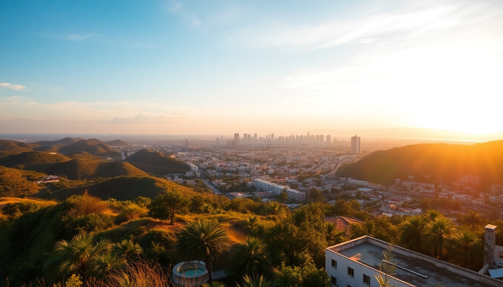

Best Cities to Visit in Mexico: CDMX, Cancun, Guadalajara & Oaxaca

I’ve spent the last three winters bouncing between these four Mexican cities, and each one feels like a completely different country. Mexico City is overwhelming in the best way, Cancun is a beach resort with real Mayan history hiding behind the hotel zone, Guadalajara is mariachi and tequila country, and Oaxaca is a food lover’s obsession. Here’s what I learned — no fluff, just what works.
What’s the best neighborhood to stay in Mexico City?
It depends on your vibe. I’ve stayed in three different spots, and Condesa wins for walkability and food. Roma is trendier but louder. If you want history, Centro Histórico puts you right by the Zócalo, but the streets empty out after dark.
- Condesa — tree-lined streets, Parque México, excellent coffee at Buna Café
- Roma — nightlife and taco spots like TacOrale (cash only, bring pesos)
- Centro Histórico — Hotel Zócalo Central has rooftop views of the cathedral, but skip the street-food stalls on the plaza — they’re overpriced
We booked a small apartment in Condesa through a local rental site and walked everywhere. The Metrobús line 7 runs straight through the neighborhood — cheaper than Uber and almost as fast.
Is Cancun just a tourist trap or worth visiting?
Cancun’s Hotel Zone is a strip of all-inclusives and chain restaurants. I’m not a resort person, so I stayed in Puerto Juárez — the ferry point for Isla Mujeres — and took day trips. The water is genuinely that turquoise color, but the beach in the Hotel Zone is crowded and has sargassum seaweed problems in summer.
- Chichén Itzá — worth the early wake-up. Get there at 8 AM before the tour buses arrive
- Isla Mujeres — rent a golf cart for the day, eat at La Lomita for cheap ceviche
- Cenote Ik Kil — right near Chichén Itzá, but arrives crowded by 11 AM
- Mercado 28 — haggling is expected, skip the silver jewelry and buy hammocks instead
If you’re not doing an all-inclusive, skip the Hotel Zone restaurants. Take the R-1 bus downtown to Parque de las Palapas for street tacos at night — al pastor from El Ñero is better than anything on the strip.
What makes Guadalajara different from Mexico City?
Guadalajara feels smaller, slower, and more traditional. The city is the birthplace of mariachi and tequila, and you feel it. I liked that I could walk from Tlaquepaque to Zapopan in under an hour by local bus — nothing in CDMX is that compact.
- Tlaquepaque — artisan shops and galleries, but the main square restaurants are tourist menus. Walk two blocks off the plaza to El Abajeño for birria
- Tequila town — take the Jose Cuervo Express train if you want the full tour, or a local bus for a quarter of the price
- Hospicio Cabañas — the Orozco murals inside are better than most of the art in CDMX’s Palacio de Bellas Artes, and quieter
- Lucha Libre at Arena Coliseo — tickets are cheap, buy them at the box office an hour before
I stayed at Hotel de Mendoza in the historic center — old-school, slightly creaky, but the rooftop bar has a direct view of the cathedral. For breakfast, La Cafetería near the Degollado Theater serves chilaquiles that beat any I had in CDMX.
Why is Oaxaca City the food capital of Mexico?
Because it’s not trying to be. Oaxaca’s food scene comes from markets and family-run molcajetes, not celebrity chefs. I spent three days just eating my way through Mercado 20 de Noviembre and Mercado Benito Juárez. The mole there is not a sauce — it’s a religion.
- Mercado 20 de Noviembre — get the tlayuda from Doña Vale, then the memelas from the stall next to the butcher section
- Casa Oaxaca — upscale rooftop dining, but you need a reservation a week ahead
- Hierve el Agua — petrified waterfalls about an hour out of town. Go early, it’s a tourist circus by noon
- Monte Albán — the Zapotec ruins sit on a hill above the city. Walk up from the Museo de las Culturas to save on a tour guide
Skip the mezcal tasting rooms in the city center — they mark up bottles 300%. Go to Mezcalería El Cortijo in the Jalatlaco neighborhood instead. The owner pours free tastes and sells bottles at distillery prices.
When is the best time to visit each city?
Timing matters differently for each place. Here’s what I learned from hitting them at the wrong times.
- Mexico City — October to April is dry and mild. Avoid August (rain every afternoon) and December (locals travel, everything gets booked)
- Cancun — November to March is peak season, but the water is calm. May to October is cheaper but hotter, and hurricane risk peaks September–October
- Guadalajara — October for the Fiestas de Octubre festival. Summer is fine but rainy afternoons
- Oaxaca — July for Guelaguetza festival (book hotels 6 months ahead). December is crowded but the weather is perfect
I made the mistake of going to Cancun in late August. The humidity was brutal, and two days had red-flag warnings for swimming. Stick to winter for the coast.
FAQ
Is it safe to take Uber in Mexico City? Yes, but only request from well-lit areas and confirm the license plate before getting in. I’ve taken dozens of Ubers in CDMX without issues, but drivers sometimes cancel if you’re in a narrow street. The Metro is safe during the day but gets pickpocket-heavy on Line 3 during rush hour.
Do I need to speak Spanish to get by in these cities? Not fluently, but basic phrases like ¿Cuánto cuesta? and La cuenta, por favor help a lot. In Cancun’s Hotel Zone and tourist-heavy spots in CDMX, English is common. In Oaxaca markets and Guadalajara’s local neighborhoods, you’ll struggle without some Spanish. Google Translate offline mode saved me in Oaxaca.
How many days should I spend in each city? Minimum 4 days in Mexico City, 3 in Oaxaca, 3 in Guadalajara, and 4–5 in Cancun if you want beach time plus ruins. I tried to do CDMX in 3 days once — regretted it. The city is too big to rush.
Conclusion
- Stay in Condesa (CDMX), Puerto Juárez (Cancun), Tlaquepaque (Guadalajara), and Jalatlaco (Oaxaca) for the best local experience
- Eat at markets, not tourist squares — Mercado 20 de Noviembre in Oaxaca and Mercado 28 in Cancun are worth the detour
- Book Chichén Itzá and Hierve el Agua as early morning trips to beat crowds and heat
- Skip the resort restaurants in Cancun and the mezcal tasting rooms in Oaxaca center — walk a few blocks for better food and prices
- Travel between October and April for the most reliable weather across all four cities